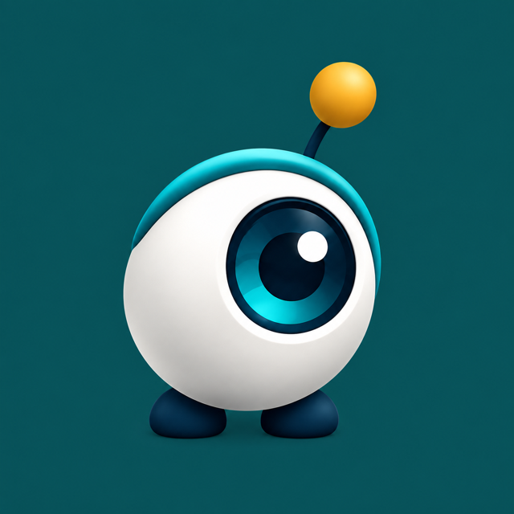

A local-only companion for the Mac
One priority, kept in view.
Focus Sentinel watches which app is in front, notices when it drifts from the work, and asks before it assumes. It keeps no score. Nothing it learns leaves your Mac.
Requires macOS 26 or later on Apple silicon. Not released yet; the first build ships through the tracker above.

Priority
Done when
Each thread has a clear next step.
Session
The timebox shows time left, then time over. It never stops you working.
How a day goes
Four moments, in order.
No dashboard to tend. Write a sentence, start a session, answer the odd question, and read the record when you like.
-
Write the priority as one sentence.
Focus keeps one. A new one replaces it and the old one moves to Recent. If the sentence has no verb or no outcome, Focus offers a rewrite; your wording still wins. Add a Done when line so finished is clear.
Priority Draft the grant budget · Done when Every line has a number -
Start a session, timeboxed if you like.
Pause it, take a break, log a detour when you leave on purpose, and finish when you stop. Stopping early asks why; every field is optional. The timer lives in the menu bar.
-
Get a question, not a verdict.
Focus compares the app in front with the priority's context pack. Drift for a while and the menu-bar mark changes; nothing else happens. Drift longer and a small panel names the app and offers a way back. When Focus cannot tell, it asks. Your answer becomes a rule, and it stops asking.
A small question.Is Numbers part of Draft the grant budget?
Focus has not been told which apps this task lives in. One answer covers the whole app, for this priority.
Yes, add itNo, it isn'tNot now -
Read the record.
History lists each nudge, where it was shown and what you answered. If Focus should have spoken and did not, say so there. Records older than the retention limit you choose are deleted daily.
What it does
Small instruments, one job each.
-
The context pack
Apps, sites, keywords and files that belong to the priority. Add them on Details or drop them onto the window. Recent priorities return with their pack and rules.
-
Rules you can read
Mark an app or site related or unrelated, for this priority or this session only. Same facts, same answer, every time.
-
Timeboxes that never stop you
Set a limit and Focus shows time left, then time over. Sessions keep wall-clock time: an hour asleep is an hour spent, and the app says so.
-
A menu-bar mark
The mark shows what Focus believes right now. Click it for the priority, the timer, open questions and session controls. A global shortcut sets a new priority from any app.
-
Quiet when it should be
A daily cap on interruptions. Silence while you present, while a microphone is live, while you are away, and in the quiet hours you set.
-
Interrupt me less
One switch sends nudges and questions to the menu bar instead of panels. Reduce Motion turns it on for you. Every panel can be answered, snoozed or closed.
-
A tour on the real window
The walkthrough highlights each control in turn and offers to do the step for you. Replay it from Help.
-
Yours to export or delete
Export your activity and your settings as separate files. Delete everything from Privacy settings, and Focus restarts empty.
Privacy
Your data stays on this Mac.
No account, no sync, no usage reports. This is the app's own wording from its Privacy settings, and the build gate checks the shipped binary against it.
-
What it reads
Which app is active. If a browser shares its site without a permission prompt, the host name only.
-
What it never reads
Window titles, full web addresses, file paths, document names, or anything you type.
-
No network
Focus goes online only if you turn on update checks. A check sends the app's name and version and nothing about you.
-
Permissions are yours to give
Focus asks macOS for nothing until you switch it on in Privacy settings. Accessibility and Screen Recording are listed there, off, with a note of what each would let it read.
-
Away means quiet
A minute without keyboard or mouse, or longer if you choose, and Focus stops counting and stays quiet until you are back.
-
You can check
The source is public under the MIT licence. The data file is one folder in Application Support; Privacy settings show it in the Finder.
The companion is decoration, not a sign of surveillance. Nothing in the app praises, scores or scolds. A nudge describes the activity; a question is a real question.
Who it is for
Work that lives across many apps.
- Writers and researchers who keep one question open all day and drift into a browser without noticing.
- Engineers and designers whose task spans an editor, a terminal, a few sites and a handful of files, and who would rather tell the app that list than have it guess.
- Anyone on calls who needs silence while a microphone is live, while presenting, and after hours.
- People who read the privacy page first. Every signal is listed, every permission is off until you switch it on, and the record can be inspected, exported or deleted.
Questions
Straight answers.
Does it read my screen?
No. This version requests neither Screen Recording nor Accessibility, and nothing in it reads what those would unlock. It reads which app is active and, where a browser shares it freely, the site's host name.
Does it phone home?
Only if you turn on update checks in General settings. They are off until you do, and a check carries the app's name and version and nothing about you.
Does it block apps or sites?
No. Focus blocks, hides and closes nothing, and a timebox never stops you working. It notices, asks, and offers a way back.
What happens on a call or a presentation?
A live microphone keeps Focus quiet, because a call is not a distraction. The same goes while you present, while you are away, and in quiet hours. Switch the microphone rule off and a nudge may arrive mid-call.
Where is my data, and can I take it with me?
One folder under Application Support on your Mac; Privacy settings show it in the Finder. Export your activity and your settings as separate files from the File menu. Delete everything from Privacy settings; that cannot be undone.
When can I download it?
There is no public build yet. The release tracker lists what remains before the first signed, notarised build: crmitchelmore/focus-sentinel, issue 12. Updates arrive only if you switch update checks on.